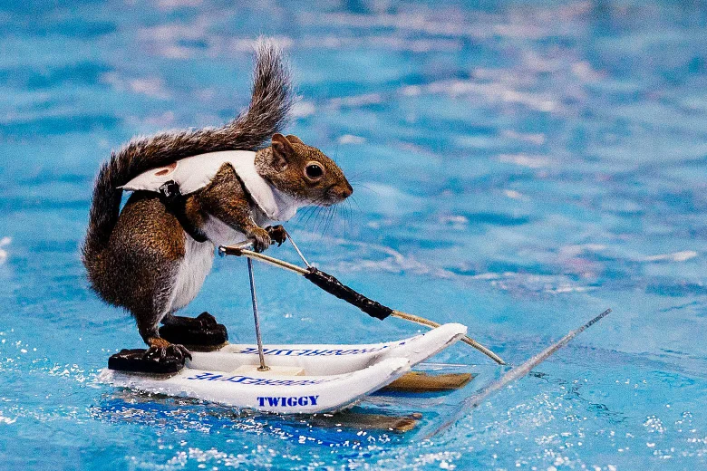

Hello, I'm Dr. Sammy, PhD!

About me
My name is Sammy and I'm an oceanographer at Vanderbilt!
Vanderbilt's proximity to oceans, as well as its pesky undergrads, are the main reasons you've probably never seen me on campus.
My research interests include:
- Marine geology
- Chemical oceanography
- The location of the nearest trash can with a Rand cookie
Social Media
You can find more info about my friends at VandyHacks at the links below!